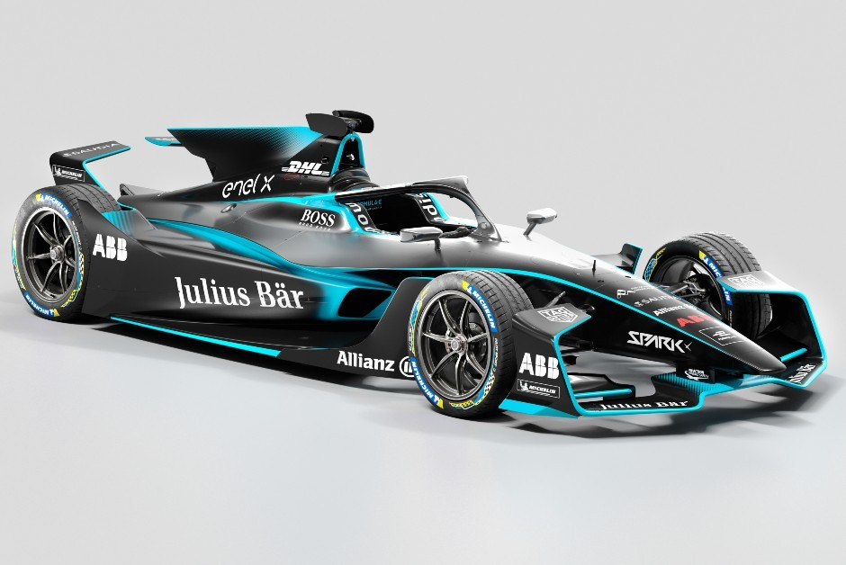
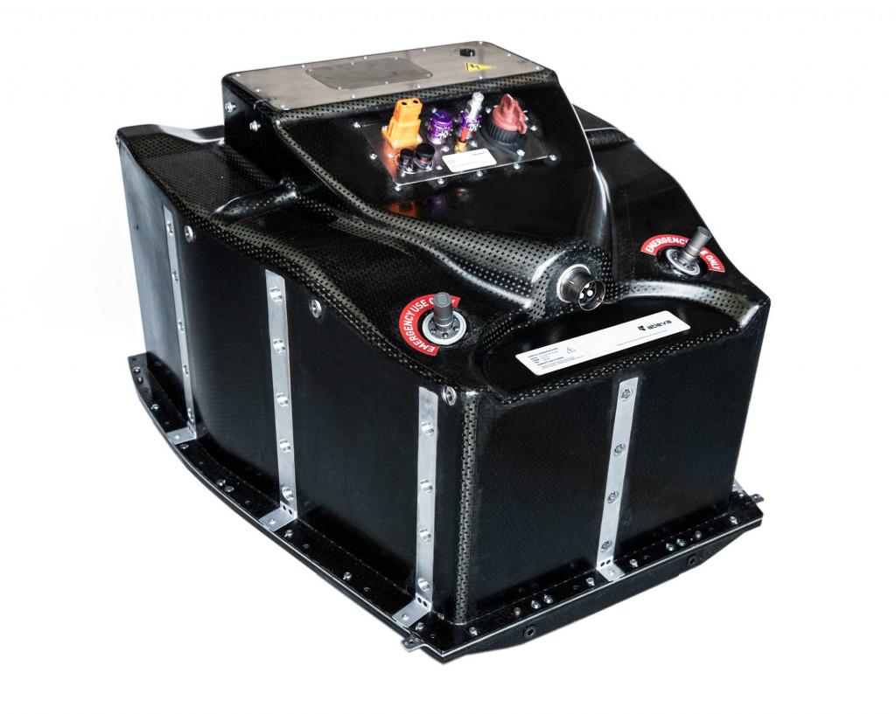

Design
O design dos carros da Formula-e é incialmente extraído do estilo da Formula-1, mas com cada geração nova, a aparência é modificado para um estilo mais futurista, que representa a tecnologia investida para o futuro do planeta com sustentabilidade. Atualmente os carros estão na Geração 2 EVO (Veja imagem ao lado/abaixo), sua tecnologia foi melhorada em relação a Geração 1 em relação ao estilo e segurança, além da bateria e outros sistemas.
Powertrain
O powertrain é o sistema que faz o carro mover, nele estão o inverter, que torna a corrente contínua (DC) da bateria em corrente alternada AC e controla a velocidade do motor ao alterar a frequência (AC), o motor que produz o torque para o carro se mover, que por ser elétrico, a sua curva de torque se mantém no máximo até se aproximar à velocidade máxima, assim possuindo uma aceleração impressionante, e a transmissão que transfere o movimento do motor para as rodas traseiras. O sistema também se encarrega em regenerar a carga da bateria através da propriedade de gerador dos motores elétricos, ativada quando o carro está freando para desgastar menos os discos de freios e recarregar um pouco da bateria.
Bateria
As baterias usadas na Formula-e são fabricadas pela mesma empresa, elas são compostas de milhares de células de baterias de íon de lítio, semelhantes aquelas usadas em smartphones e notebooks, mas devido ao uso intenso das baterias, requerem um sistema de resfriamento, que é desenvolvido por cada equipe. Na primeira geração, os carros precisavam ser trocados no meio da corrida, porque elas não conseguiam aguentar os 4 5 minutos da corrida e possuíam potência de 150kW. Na segunda geração, os carros são capazes de correr pelos 45 minutos, mas ainda dependendo das habilidades do piloto de acelerar e regenerar durante o circuíto, a potência máxima aumentou para 250kW, aumentando a velocidade máxima e a aceleração. É previsto para a terceira geração que utilizem baterias de menor capacidade, mas que carregam mais rápido para ter pit-stops semelhantes às outras corridas.
Pneus
Os pneus usados na Formula-e são pensados em ser ecológicos, todos fabricados pela Michelin, para cada carro só podem ter 2 kits de pneus para qualquer condição em uma corrida, assim, as equipes não vão desperdiçar os kits que não forem necessários. Além de ser mais ecológico, os pneus são semelhantes aos utilizados em carros de rua esportivos, ou seja as corridas também servem para melhorar a tecnologia dos pneus.